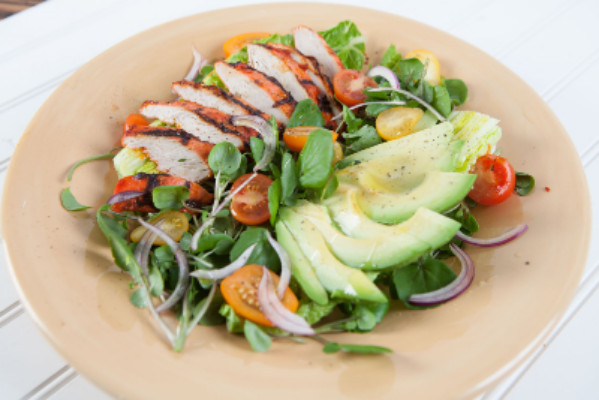

Salad

Achiote Chicken, Watercress & Avocado Salad
This fresh, tasty and satisfying salad is sure to become a favorite in your rotation!
Ingredients
- 1 tablespoon achiote paste
- 2 tablespoons plus 2 teaspoons extra virgin olive oil
- 2 teaspoons lemon juice
- 1 boneless, skinless chicken breast, 8 ounces
- 1 romaine heart
- 4 ounces living watercress
- ½ small sweet red onion, julienned
- 6 organic heirloom cherry tomatoes, halved
- ½ ripe Hass avocado
- 2 teaspoons white wine vinegar
- 1 teaspoon Dijon mustard
- 1 teaspoon kosher salt
- 1 teaspoon fresh cracked black pepper
Steps
- Combine achiote paste, 2 teaspoons olive oil and lemon juice, then marinate chicken breast for 1 hour.
- In a cast iron grill pan, grill marinated chicken breast oven medium heat until a thermometer inserted into the thickest part reads 165° F, then let rest.
- While chicken is resting, cut romaine heart in half lengthwise and place into serving bowl. Wash, rinse, pat dry and pick watercress leaves, leaving 1-2 inches of stem attached to each leaf. Place in between romaine halves, then sprinkle with onion and cherry tomatoes.
- Slice and fan the grilled and rested achiote chicken breast on one side of the salad greens and the avocado half on the other side.
- Whisk vinegar, mustard, 2 remaining tablespoons of olive oil, salt and pepper together in a small bowl. Dress salad to taste and serve.